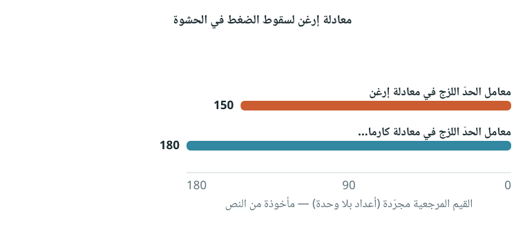

معادلة إرغن لسقوط الضغط في الحشوة
Ergun Equation
علاقة تجريبية عامة تحسب سقوط الضغط عبر حشوة من الحبيبات بجمع حدّ لزج يتناسب مع السرعة وحدّ اضطرابي يتناسب مع مربعها، بمعاملين 150 و1.75 ونسبة الفراغ وقطر الحبيبة.
معادلة إرغن هي العلاقة المرجعية لحساب سقوط الضغط عندما يمر سائل عبر حشوة من الحبيبات، وقد صاغها إرغن عام 1952 من مجموعة واسعة من البيانات التجريبية تغطي مدى واسعاً من أحجام وأشكال الحبيبات. وتقوم على جمع حدّين: حدّ لزج يتناسب مع السرعة الأولى ويغلب في التدفق الصفحي، وحدّ اضطرابي يتناسب مع مربع السرعة ويغلب في التدفق المضطرب. ويظهر في الحدّين معاملان عدديان هما 150 و1.75، وتظهر نسبة الفراغ مرفوعة للقوة الثالثة في المقام، وقطر الحبيبة في المقام أيضاً. ولهذا تكون الحشوات الأكثر إحكاماً، أي الأقل نسبة فراغ، أعلى سقوطاً للضغط بفارق كبير، وتكون الحبيبات الأصغر أعلى سقوطاً أيضاً. وتُستعمل المعادلة في تصميم أعمدة الامتزاز والمفاعلات ذات الحشو وأبراج التقطير والمجففات، وفي تحديد الحدّ الذي يبدأ عنده التميّع. والخطأ الشائع أن تُطبَّق بقطر الحبيبة الحقيقي للحبيبات غير الكروية دون استبداله بالقطر المكافئ السطحي الحجمي، فيُبالغ في تقدير السقوط أو يُقلَّل منه.
كيف تعمل الظاهرة؟
تعمل معادلة إرغن لأن سقوط الضغط في الحشوة ينتج من آليتين تجريان في الوقت نفسه: احتكاك لزج بين السائل وسطح الحبيبات، وفقد حركة في المسارات المتعرجة التي يغيّر فيها السائل اتجاهه مراراً فينفصل خلف الحبيبات. والآلية الأولى تتناسب مع السرعة لأن إجهاد القص اللزج يتناسب مع تدرج السرعة، والثانية تتناسب مع مربع السرعة لأن فقد الحركة في الانفصال يتناسب مع الطاقة الحركية. ولهذا يكون الحدّ اللزج هو الغالب عند السرعات الصغيرة والحبيبات الناعمة، والحدّ الاضطرابي هو الغالب عند السرعات الكبيرة والحبيبات الخشنة. ونسبة الفراغ تدخل مرفوعة للقوة الثالثة لأنها تحدد مساحة المسار المتاحة للتدفق وسرعة السائل داخله في الوقت نفسه، فتأثيرها أقوى من تأثير أي متغير آخر في المعادلة.
العلاقة بالأرقام
الصيغة −ΔP/L = 150·μ·U·(1 − ε)²/(x²·ε³) + 1.75·ρ_f·U²·(1 − ε)/(x·ε³) تعطي باسكال لكل متر. ولماء بسرعة 0.01 m/s عبر كرات 3 mm بنسبة فراغ 0.4 ينتج سقوط ضغط نحو 1484 Pa على متر واحد. ويُلاحظ أن خفض نسبة الفراغ من 0.4 إلى 0.35 يرفع السقوط بأكثر من الضعف لأن ε³ في المقام، وأن مضاعفة السرعة تضاعف الحدّ اللزج مرتين وتضاعف الحدّ الاضطرابي أربع مرات. وتُكتب المعادلة أيضاً بصيغة معامل احتكاك f* = 150/Re* + 1.75، وهي صورة تُسهّل مقارنتها بمعامل دارسي في الأنابيب.
مفاهيم متقاربة
معادلة إرغن تجمع حدّين، بينما كارمان-كوزيني حدّ لزج واحد بمعامل 180 وتصلح للتدفق الصفحي فقط، فاستخدامها في السرعات العالية يقلل السقوط كثيراً. وتُفصل عن معادلات الأنابيب الفارغة لأن المتغير الهندسي فيها قطر الحبيبة ونسبة الفراغ لا قطر الأنبوب وخشونته النسبية. وتُفصل عن علاقة الطبقة المتميّعة: بعد التميّع يثبت سقوط الضغط عند الوزن الطافي لكل وحدة مساحة ولا تصلح إرغن لوصفه لأن نسبة الفراغ تتغير مع السرعة. وتُفصل عن قانون دارسي للوسط المسامي الذي يصلح للسرعات الصغيرة جداً ويغفل الحدّ الاضطرابي كلياً.
حدود التطبيق
صيغت المعادلة لحشوة عشوائية من حبيبات كروية متجانسة الحجم، وتحتاج للحبيبات غير الكروية استبدال القطر بالقطر المكافئ السطحي الحجمي، وللتوزيعات الواسعة استخدام القطر المتوسط السطحي الحجمي. وتفقد دقتها في الحشوات المنتظمة المرتبة هندسياً حيث تختلف المسارات عن العشوائية، وفي الحشوات ذات نسبة الفراغ العالية جداً حيث يقترب السلوك من قناة مفتوحة. كما تفترض جداراً أملس وأبعاداً كبيرة للعمود بالنسبة لقطر الحبيبة، فتظهر تأثيرات جدارية في الأعمدة الضيقة. ولا تصف المعادلة التغيرات الموضعية في نسبة الفراغ قرب الجدار، ولا الحشوات التي تتغير فيها نسبة الفراغ على الطول بسبب الانضغاط أو الترسيب.

| الكمية | القيمة | المصدر |
|---|---|---|
| معامل الحدّ اللزج في معادلة إرغن | 150 — | [2] |
| معامل الحدّ الاضطرابي في معادلة إرغن | 1.75 — | [2] |
| سقوط الضغط المحسوب لحشوة 1 m من كرات 3 mm | 1484.37 Pa | [2] |
| معامل الحدّ اللزج في معادلة كارمان-كوزيني | 180 — | [2] |
المصادر
- 1 Fluid Flow Through Packed Columns — S. Ergun — Chemical Engineering Progress (AIChE) (1952). scispace.com/papers/fluid-flow-through-packed-columns-32ay002rb0 · اطُّلع عليه 2026-11-28
- 2 Pressure Drop Through a Packed Bed — Carman-Kozeny and Ergun equations — Neutrium (2026). neutrium.net/articles/fluid-flow/pressure-drop-through-a-packed-bed/ · اطُّلع عليه 2026-11-28
- 3 Fluidization Engineering, 2nd ed. — Daizo Kunii & Octave Levenspiel — John Wiley & Sons (1991). openlibrary.org/works/OL9364325W · اطُّلع عليه 2026-11-28
استشهد بهذا المصطلح
الصيغتان مبنيتان من بيانات الصفحة نفسها: العنوان والتاريخ ورابط النسخة المنشورة.
معادلة إرغن لسقوط الضغط في الحشوة — Ergun Equation. (2026). ديوان المعرفة — انفراد. https://infiradev.com/diwan/terms/term-ergun-equation.html
@misc{term-ergun-equation2026,
title = {معادلة إرغن لسقوط الضغط في الحشوة},
titleaddon = {Ergun Equation},
howpublished = {{ديوان المعرفة — انفراد} — مرجع علمي عربي},
year = {2026},
url = {https://infiradev.com/diwan/terms/term-ergun-equation.html},
urldate = {2026-11-28},
note = {مراجعة علمية: Abdullah Al-Huwaidi}
}
راجعه: Abdullah Al-Huwaidi · 2026-11-28 · آخر تحديث 2026-11-28